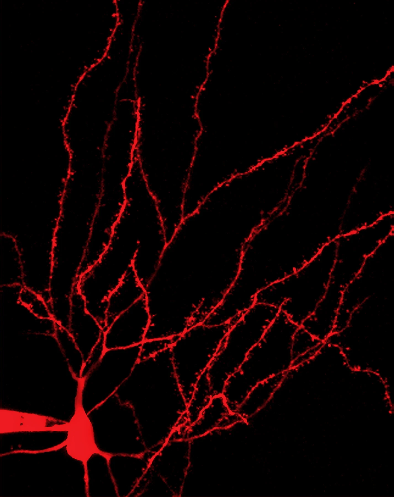

OCD and Compulsive Behaviors
Investigating how alterations in striatal circuit function and neuromodulation contribute to compulsive behaviors.
Investigating how basal ganglia circuits shape behavior and how their dysfunction contributes to neurological and psychiatric disorders.
Explore Our Research
Investigating how alterations in striatal circuit function and neuromodulation contribute to compulsive behaviors.
Understanding how striosome and matrix compartments are differentially engaged and regulated to shape behavior.
Studying how neuromodulators regulate striatal circuit function in health and disease.
Examining how dopamine depletion and replacement alter striatal compartmental function and contribute to motor and non-motor symptoms.
Hobel et al. · Neuron · 2026
Read the publication →The Plotkin Lab at Stony Brook University investigates the organization and function of basal ganglia circuits, with a focus on how these circuits regulate behavior and contribute to neurological and psychiatric disorders.